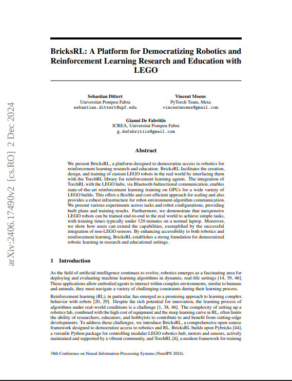

Publications
Selected research papers


GEM Workshop, ICLR 2024 & J. Chem. Inf. Model. (JCIM)
I am a researcher working at the intersection of deep reinforcement learning, robotics, and AI-driven scientific discovery. My work focuses on developing RL algorithms and applying them to real-world robotic systems and automated research pipelines.
Selected research papers

Areas I am actively working on
Core research area focused on developing novel deep RL algorithms, exploration strategies, and sample-efficient training methods.
View projectsApplying reinforcement learning to real-world robotic systems, bridging the sim-to-real gap. Creator of BricksRL for accessible robotics research.
BricksRLExploring LLM applications and agents, including RLHF, tool use, and combining language models with decision-making systems.
AI-driven scientific discovery, including drug design and molecular optimization. Contributor to ACEGEN for generative chemical agents.
ACEGEN